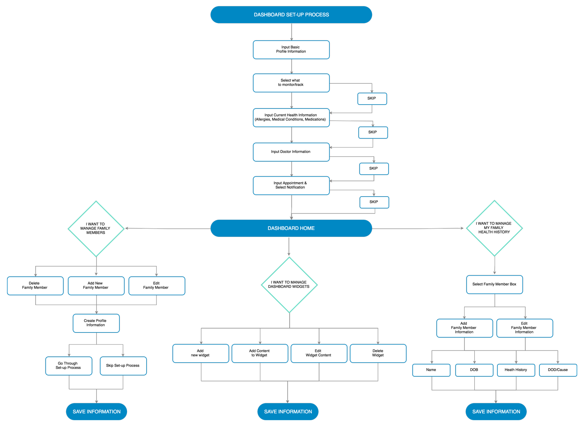

Individual’s health care information is scattered across multiple providers and facilities making it hard to track health information and maintain important health records.
Create a universal solution for individuals to be in the driver seat of their health. Mandala Health focuses on an efficient getting started process, a straightforward dashboard and a visual way to record the health history of a family.
Mandala Health was created based off my own desire to have a better place to store information gathered about my one year old son’s health and doctor visits, especially after a month of continual sickness. I also wanted to have a way to capture both my and my husband's family health history. I am that person that still calls my mom to remind me if we have a history of heart disease in my family. Something I know I will not be able to rely on forever.
Prior to starting this project I conducted an interview with a healthcare executive who provided insights about the current state of healthcare, the future of healthcare and what people should be thinking about when it comes to being proactive about their health. A few takeaways included learning about the benefit of preventative healthcare and that technology is playing a huge role in empowering the individual to be more aware and concise about their health.
A survey was then sent out to a group of individuals to understand how they felt about managing their health, how the currently manage their health information and what they would want to see in their personal health portal. There were 24 responses to this survey.
From the survey I learned that there is a space for creating a personal health tracking and management system particularly for families. Living a healthy lifestyle is important to the majority of participants and they do track health information but it is not centralized and easily accessible. From the small percentage of people who do utilize a health management system, the system is provided by their health care professional or a hospital. Of all the suggestions for what information they would like to track prescriptions, doctor's information and allergies topped the list of importance. Other product functionality that participants would love to see is tracking immunization for their children and receiving automatic text/email reminders for prescriptions, appointments and more. Most participants felt comfortable placing health information on a web application as long as it was secure.
Based off of expert insights and survey results three user personas were created to help streamline the goals and objectives in creating Mandala Health.
Betsy is responsible for all of her family's records and is very organized. She has all the important information tracked but it is not centralized and easily accessible especially for her husband. Betsy worries her husband wouldn't know what to do if something were to ever happen to their two young children in her absense.
Lauren’s passion in life is to empower others to live their best life (life coach). She lives a healthy lifestyle, wears her Fitbit daily, and tracks her diet and heart rate. Lauren plays an active role in her aging parents lives and feels overwhelmed managing all their doctor appointments and medications.
Peter maintains all his family's paperwork and loves finding new technologies to help him stay organized. A recent health scare has made Peter interested in capturing all of his family's health history and centralizing all his family's health records in one place. Peter is eager and determined to find the best technology to help him achieve his goals.
An analysis of market competitors included Microsoft HealthVault, WebMD’s Health Manager and Caresync. I looked to see where there were strengths and weaknesses and what elements that I could find to help Mandala Health stand apart in the market place. Caresync was weakest overall but both Microsoft HealthVault and WebMD’s Health Manger were very extensive and solid established platforms.
The main opportunity I saw for Mandela Health was to focus on a guided easy to follow getting started process, a strong dashboard and easy navigation especially switching to different family members and editing information.
User stories were generated from survey findings, expert insights, competitive analysis and the goals and motivations of the user personas. Draw.io was then used to create user flows focusing on the getting started process, adding widgets, adding family members, and adding family health history. The focus of the user flows is having everything stem from the dashboard and helping users stay engaged with the application.
Card sorting was conducted to help prioritize and categorize how information should be organized on the dashboard. Low-fidelity wireframes were produced for the dashboard, getting started process and the family health history page.
While in practice once the MVP offering is determined I create the brand for a project. This was not the case for Mandala Health.
Initially basic UI elements were established that helped create the pattern library. The goal for the UI of the platform was to feel trustworthy, clean and light. Bright blues and green were determined to be the main colors with a collection of secondary colors (red, orange, yellow, purple) to help with tracking, navigation and call to actions. A collection of greys were used for supporting text and structure.
My type system features Roboto Condensed for the headers for its strong geometric lines and exceptional readability. I use a lighter weight of Roboto Light for the body content.
Once the dashboard and main user flows were created I went back to explore the identity for this personal health management platform. I wanted to create a unique identity that would stand apart from what already existed in the health tech marketplace. This was a great challenge as many of my initial ideas already existed and I didn’t have a strong parent company like my competitors in Microsoft or WebMD.
In the end a loose geometric interpretation of “Mandala” was used as the logo icon and the name for this health application. Mandala is a geometric pattern that represents the universe, which fits the goals and desires for a personal health management system. Health was added to the brand name so users can easily identify that this is a health tech offering.
I created a collection of the Mandala geometric pattern and tested my two favorite designs to determine which logo would be strongest. Version B was the clear winner with 90% of all votes calculated.
A script was developed to run moderated user tests. I conducted this test on three individuals who had similar traits to the user personas; a busy mom, a leader, and a proactive husband.
The focus of the interviews were to find out the strengths and mostly weaknesses of the below senerios:
Overall I received positive feedback of the look and feel of the platform. Everyone liked the clean design and believed the platform felt secure. Each tester left expressing their desire to be more proactive with their health and offered a lot functionality to consider including syncing with other apps they currently use. Other elements that I asked for in questioning is finding out ways to keep them engaged, email and text communication was a popular response as this is a mode of communication they currently utilized and find helpful.
The most valuable feedback in the moderated user testing was in the "getting started" process. Without guiding them all three participants struggled to realize that they had to scroll down the page to save and move to the next step, particularly while filling out the "Current Health" section. Another element that was overlooked was the ability to go back or review any information they had already inputted or being able to see a final summary of their information. Also, the ability to save and come back at a different time to complete the process was another suggestion that I will strongly consider in future development.
All these valuable insights validate how important this guided getting started process is and how challenging it can be to develop an effective way for users to fill out a lot of information using forms. This information will be used to set up some additional user tests to determine button placement and how much information should be on each step of the multi-step getting started process.
Healthcare is overwhelming and complex and there is a real need to turn health care on its head and help individuals be proactive instead of reactive in their health. While in my discovery people would use a product like Mandala Health, there is still a disconnect in seeing the value in this product vs. actually using the product. The challenge is discovering how to help users feel this is a benefit in their lives vs. a burden and too hard to manage.
Like what you see? Want to learn more?
EMAIL ME.